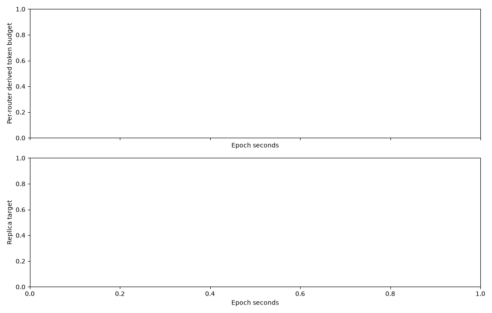

{ "status": "incomplete", "warnings": [ "c919b6d3351746b1b0c022f364bf8dc1.jsonl: producer still running or missing audit closure" ], "fits": 0, "samples": 0, "target_queue_time_ms": 1000 }

Samples · Fits